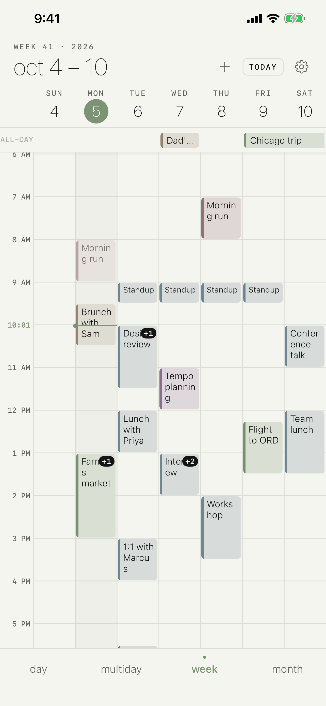
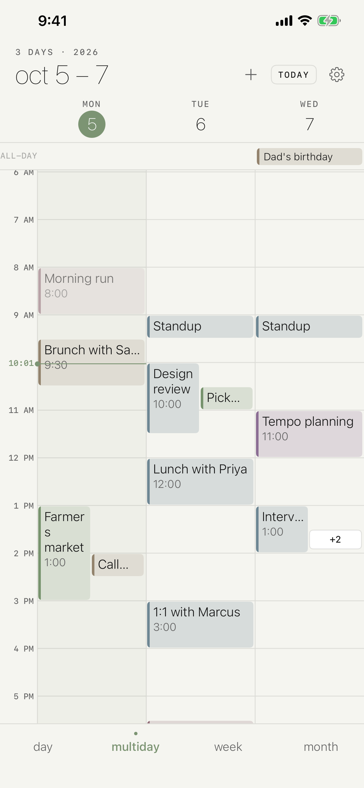
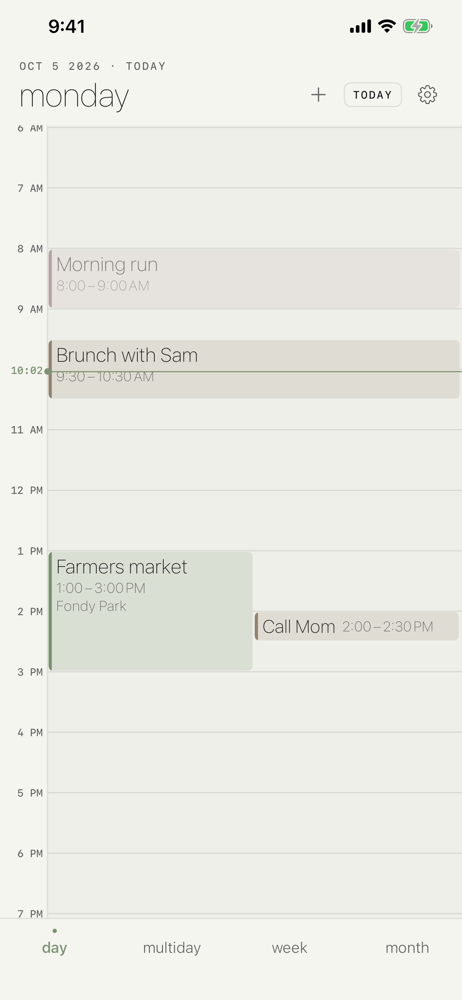
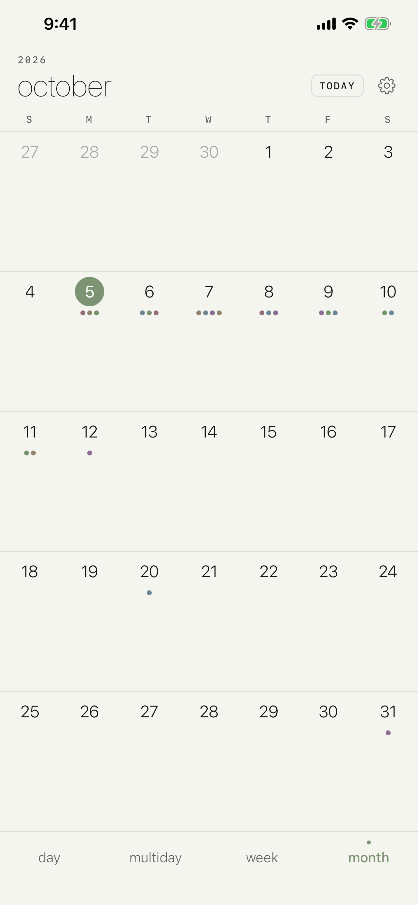
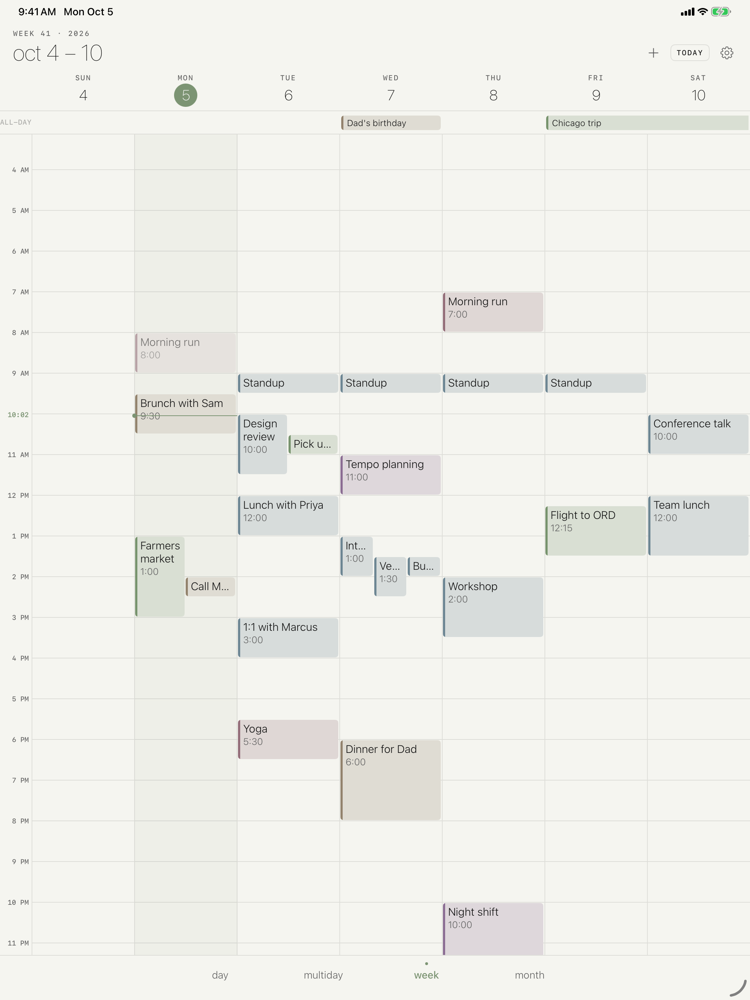
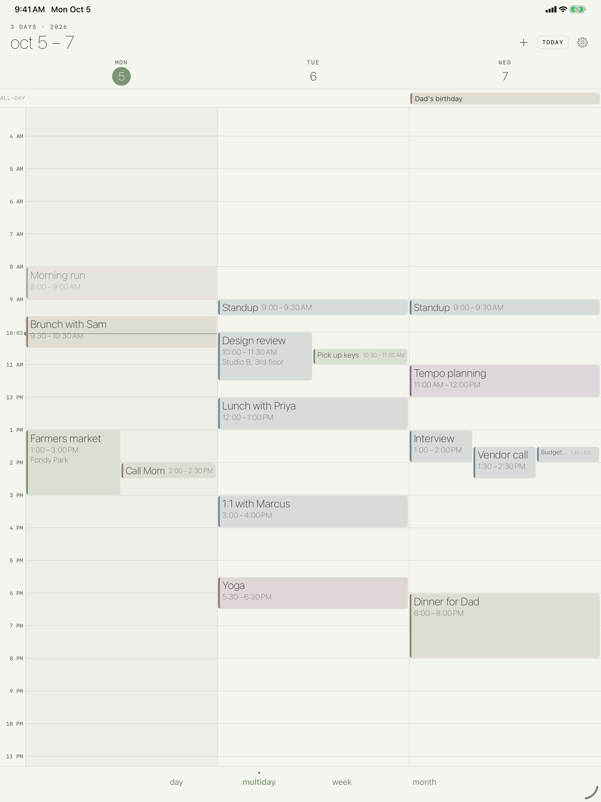

Tempo
Your calendar, laid out as a timeline — day, three, five, or a whole week.
Your calendar, laid out as a timeline — day, three, five, or a whole week.
Tempo is a calendar built around the multi-day timeline. It reads the calendars already on your device — iCloud, local, and any account you've added in Settings — and lays them out across a day, three or five days, or a full week, with a month grid when you need to look further out. Show only the calendars you care about, and add or edit events with Apple's own editor.
iPhone




iPad


Day, three-day, five-day, and week views share the same timeline, so switching never loses your place.
The month grid shows what's coming without opening each day.
Hide work on the weekend or family during the workday — visibility is yours to set.
Works with the calendars already on your iPhone and iPad. No new account, no sync service.
Keep Exploring
Back to the productivity apps